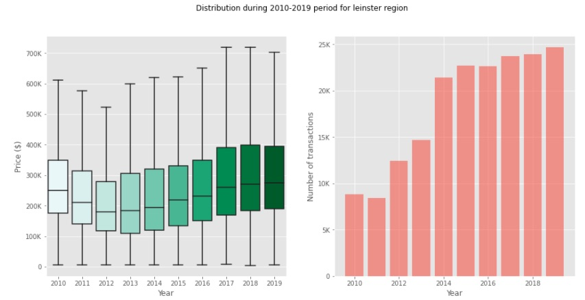
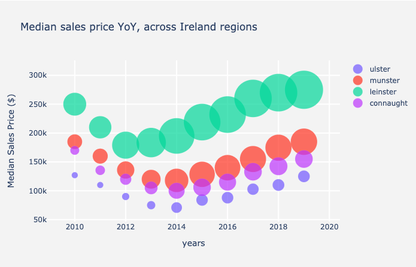
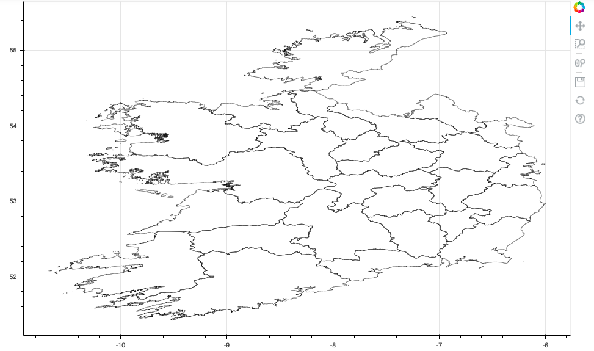

Visualize Real Estate Market trends in Ireland
COVID-19 is a great opportunity to reflect on ourselves and to dedicate time and effort to things we normally cannot do during our normal busy lives. Hence, I decided to start writing my first Data Science related blog post.
In my first post I will cover the following content:
- Pull data from a website in the form of a csv and load it into Pandas
- Evaluate the data, manipulate and clean the data
- Visualize major trends in the data using matlpotlib, plotly and bokeh
Disclaimer and requirements
Everyone needs to start somewhere. Being my first post, I am still a learner :) Please, if you have comments or suggestions leave some below!
What are the Irish real estate market trends?
This question was something I was curious about. I recently bought a house in Dublin and I’m pretty sure that it was overpriced…! However, it is always better to evaluate your decisions and choices with data at hand.
I discovered recently that you can access and download transaction data from the Irish registry. This data is open source and it is relatively well explained. I started a mini-project to visualize the data set. I’m not sure yet if this will evolve in a full project with modelling and more complex visualization. For now, I am happy to start tinkering with the data. The goal of the analysis (you can find the full version here) is to use different visualization libraries (matplotlib, seaborn, plotly and bokeh) to get a feel for the data. Visual EDA is one of the preliminary steps to modelling, with data cleaning.
What is the yearly transaction distribution?
The data is looking at the transactions occurred between 2010 and 2019 (I excluded the most recent 2020 data). The idea here was to evaluate the trend of the market after the financial subprime mortgage crisis occurred at the end of 2007 in the US. The financial crisis started in 2008 and from the US spreaded across the world, impacting all financial markets.

This image shows the distribution of house prices (left) and the number of transactions per year (right) in the Leinster region.The data collected here shows an interesting trend that suggest that, after 2008, the real estate market prices didn’t fall right away. Instead, the trend went down to reach the bottom 4 years after. It took another 7 years for the median prices to reach the same level they were in 2010. However, the variance of the distribution was more extreme in 2019, meaning that the prices fluctuated much more recently.
Another interesting observation, in my opinion, is to see that the number of transactions didn’t quite slow down. Instead, we have a significant increase during the recovery of prices. This could indicate that investors that were not impacted by the crisis exploited the downflall of the median price to buy more.
Summarize the price trends across Ireland using Plotly
I exploited plotly to summarize the trends across the Irish regions, plotting the median sales price over the years. A useful chart to use in this case where I had three variables is a Bubble chart, that allows to plot a third variable (number of transactions in this case) as the size of the bubble. This chart can help summarize the high-level trends at a glance.

The image shows the trends of median sales price and number of transactions over the time period considered for all the regions in IrelandIt is pretty clear from the chart that Lenister recovered earlier and much faster than other regions. This makes a lot of sense. Leinster is the most populated Irish region, accounting for more than half the total size of Irish population (2.5M over the total of 4,9M). It also welcomes Dublin, which is the tech hub of Ireland (and likely Europe).
My hypothesis is that Dublin being a tech hub, a huge chunk of its population is represented by tech employees. Tech giants such a s Google or Facebook weren’t impacted as much by the financial crisis, thus their employees could afford to buy houses at a discounted price!
A narcisistic visualization without reason to exist (yet)
I wanted to finish this article with a nice Bokeh representation of Ireland and its counties. Despite not containing useful insights, I already have some ideas on how to use Bokeh to show trends using cloropleths maps. Once I have the time and focus to continue in this direction, it will make a proper badass representation of the Irish real estate market!

Irish countiesNext, I’d love to represent price changes over shorter priod of times in a cloropleth maps like the one above. This could help summarise any seasonalities that could suggest entry points for investors.